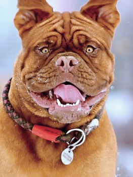

The important word here is "inappropriate"; there are plenty of appropriate things out there for your dog to chew, you just need to teach him the difference!
I know a lot of us are dog people through and through, but even so, having a furry tornado in your face isn't always desirable.
Our metaphorical door is always open for any questions, big or small. Or maybe you can help us! What fun training technique helped your dog? Let us know!